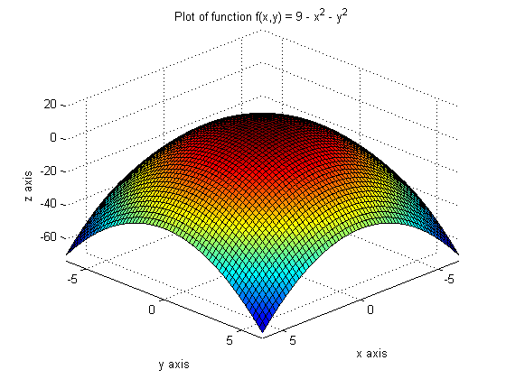
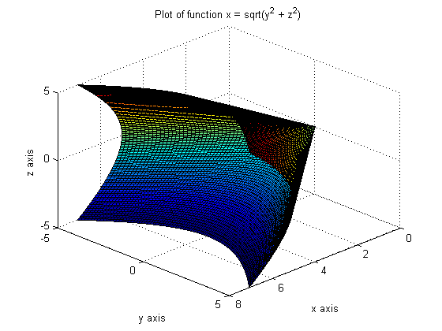
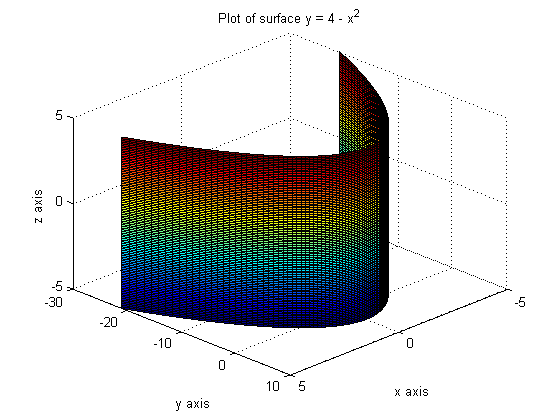

Emmanuel Taylor
Matlab Project 2 Math241 Section 0201 October 28, 2014
PROBLEM 1 Clear Matlab completely with clear all.
clear all
PROBLEM 2 Plot the function f(x, y) = 9 - x^2 - y^2 with the view at (10, 10, 10).
figure; syms x y; ezsurf(9 - x^2 - y^2) view([10 10 10]) xlabel 'x axis' ylabel 'y axis' zlabel 'z axis' title 'Plot of function f(x,y) = 9 - x^2 - y^2'
PROBLEM 3 Plot the function x = sqrt(y^2 + z^2) with the view at (10, 10, 10).
figure; syms x z; [y, z] = meshgrid(-5:0.1:5, -5:0.1:5); x = sqrt(y.^2 + z.^2); surf(x, y, z); view([10 10 10]) xlabel 'x axis' ylabel 'y axis' zlabel 'z axis' title 'Plot of function x = sqrt(y^2 + z^2)'
PROBLEM 4 Plot the surface y = 4 - x^2 with the view at (10, 10, 10).
figure; syms x z; [x, z] = meshgrid(-5:0.1:5, -5:0.1:5); y = 4 - x.^2; surf(x, y, z); view([10 10 10]) xlabel 'x axis' ylabel 'y axis' zlabel 'z axis' title 'Plot of surface y = 4 - x^2'
PROBLEM 5 Find the partial derivative of [(sin(x^2*y))/y] with respect to y.
syms x y; problem5 = diff(((sin((x^2)*y))/y), y)
problem5 = (x^2*cos(x^2*y))/y - sin(x^2*y)/y^2
PROBLEM 6 Find the second partial derivative of (x^2 - y)/(x + y) with respect to y and then with respect to x.
syms x y; problem6 = diff(diff((x^2 - y)/(x + y), y), x)
problem6 = 1/(x + y)^2 - (2*x)/(x + y)^2 - (2*(- x^2 + y))/(x + y)^3
PROBLEM 7 Find the gradient of f for f(x, y) = (xy)/(x^2*y + x + y)
syms x y; problem7 = jacobian((x*y)/((x^2)*y + x + y), [x y])
problem7 = [ y/(y*x^2 + x + y) - (x*y*(2*x*y + 1))/(y*x^2 + x + y)^2, x/(y*x^2 + x + y) - (x*y*(x^2 + 1))/(y*x^2 + x + y)^2]
PROBLEM 8 Find the gradient of f at (-1, 0) for f(x, y) = 5x^3y^2 - y/x.
syms x y; problem8 = subs(jacobian(5*(x^3)*(y^2) - y/x, [x y]), {x, y}, {-1, 0})
problem8 = [ 0, 1]
PROBLEM 9 Find the directional derivative of g(x, y) = x^2 + y^3 at (1, -2) in the direction of a = 2i - 1j.
syms x y; a = [2 -1]; u = a/norm(a); problem9 = dot(u, subs(jacobian(x^2 + y^3, [x y]), {x, y}, {1, -2}))
problem9 = -(8*5^(1/2))/5
PROBLEM 10 Find all critical points for f(x, y) = (y - 2)ln(xy). Remember that ln in Matlab is log. On your printout, write the points as coordinate pairs next to the output.
syms x y; f1 = (y - 2)*log(x*y); [xsoln1, ysoln1] = solve(jacobian(f1, [x y])) % The critical point for f(x, y) is (1/2, 2).
xsoln1 = 1/2 ysoln1 = 2
PROBLEM 11 Find all critical points for f(x, y) = x^3 + y^3 - 6xy. On your printout write the points as coordinate pairs next to the output.
syms x y; f2 = x^3 + y^3 - 6*x*y; [xsoln2, ysoln2] = solve(jacobian(f2, [x y])) % The critical points for f(x, y) are (0, 0), (2, 2), (3^(1/2)*i - 1, % -3^(1/2)*i - 1), (-3^(1/2)*i - 1, 3^(1/2)*i - 1).
xsoln2 =
0
2
3^(1/2)*i - 1
- 3^(1/2)*i - 1
ysoln2 =
0
2
- 3^(1/2)*i - 1
3^(1/2)*i - 1
PROBLEM 12 Use Lagrange multipliers to find the maximum and minimum values of f(x, y) = xy^2. Subject the constraint x^2 + y = 16. On your printout write a neat summary next to the output.
syms x y L; f3 = x*y^2; g = x^2 + y - 16; firstpart = jacobian(f3, [x y]) - L*jacobian(g, [x y]); [Lsoln, xsoln3, ysoln3] = solve(firstpart, g) values = subs(f3, {x, y}, {xsoln3, ysoln3}) % As you can see, using Lagrange multipliers, the maximum value of f(x, y) % is (16834*5^(1/2))/125 and the minimum value of f(x, y) is % -(16834*5^(1/2))/125.
Lsoln =
0
0
(512*5^(1/2))/25
-(512*5^(1/2))/25
xsoln3 =
4
-4
(4*5^(1/2))/5
-(4*5^(1/2))/5
ysoln3 =
0
0
64/5
64/5
values =
0
0
(16384*5^(1/2))/125
-(16384*5^(1/2))/125